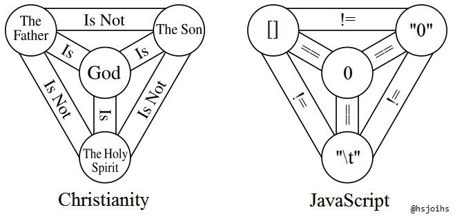

00. Link - Recreating legendary 8-bit games music with web audio API
01. Link - Deploying ES2015+ Code in Production Today
02. Link - Here are examples of everything new in ECMAScript 2016, 2017, and 2018
03. Link - JavaScript to Rust and Back Again: A wasm-bindgen Tale
04. Link - Learn RxJS in 60 Minutes for Beginners - Free Crash Course
05. Link - Understanding JavaScript Proxies
06. Link - Looking into assembly code of coercion
07. Link - ES6 Collections: Using Map, Set, WeakMap, WeakSet
08. Link - The critical path: optimizing load times with the chrome devtools
09. Link - Calling all web developers: here’s why you should be using Firefox
10. Link - The end of Framework Churn
11. Link - Build your own react
12. Link - Introducing TensorFlow.js: Machine Learning in Javascript
13. Link - TensorFlow.js Quick Start Tutorial
